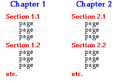

Structure de CAST
Chaque manuel électronique de CAST se compose de plusieurs chapitres, dont chacun contient diverses sections. Les sections, à leur tour, sont divisées en pages.

Le matériau de CAST est structuré de manière séquentielle, de sorte que les pages doit généralement être étudié dans l'ordre. En cliquant sur la flèche à la fin de chaque page affiche la page suivante.
Table des matières
La colonne de gauche de cette fenêtre affiche une liste des chapitres et les sections du chapitre en cours. Il fournit à votre principal moyen de parcourir le contenu de l'e-book.
Si votre écran est petit, vous pouvez réduire la taille de la table des matières (et augmenter la taille du panneau qui montre les pages individuelles) en cliquant sur la flèche en diagonale sur la partie supérieure gauche.
Bannière en haut
La bannière en haut de cette fenêtre affiche les noms du chapitre actuel, section et page. Les flèches sur son droit vous permettent de passer à la page suivante ou précédente.
Remarque
Les pages de CAST sont linéairement ordonnés et les flèches vous avancer ou reculer d'une page dans cette séquence - la flèche gauche ne pas vous passer à la dernière page visitée.
Utilisez la table des matières pour naviguer autour de CAST.